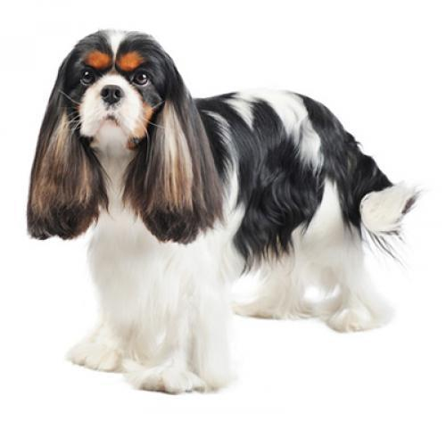

Кинг-чарльз-спаниель
Кинг-чарльз-спаниель —компактная, невысокая собака благородного вида
Она имеет крепкое телосложение и длинную шелковистую шерсть — прямую или слегка волнистую.
Варианты окрасов: черный с подпалом, триколор (черный, белый и подпал), бленхейм (белый с красным) и рубин.
Рост взрослого кинг-чарльз-спаниеля — 30-33 см, вес — 3,6-6,3 кг.
Происхождение
Той-спаниель произошел от рабочих легавых собак. Селекционеры добились уменьшенного размера, чтобы сделать собаку компаньоном аристократических дам. Именно от такого типа собак, существовавшего много веков назад, и произошел кинг-чарльз-спаниель. В результате скрещиваний с восточными породами, такими как мопс и японский хин, получили собаку с большими глазами, куполообразным черепом с довольно выпуклой теменной частью и плоской мордой, которая пользовалась популярностью как комнатная собачка с Дальнего Востока. Самый известный поклонник породы — это, конечно, король Чарльз II. В честь него порода и получила свое название.
Характер
Кинг-чарльз-спаниель — это нежная, жизнерадостная, ласковая собака и достойный компаньон. Он может быть сдержан с теми, кого он не знает, однако с друзьями и семьей он невероятно нежный. Он хорошо ладит с другими собаками и домашними животными, любит компанию людей разного возраста. Дети должны быть осторожны с ним, поскольку могут случайно травмировать эту небольшую по размеру собаку.
Поведение
Хотя это самая маленькая из всех пород, эти собаки активные и веселые компаньоны. Их любимое занятие — проводить время дома со своими хозяевами. Часто они очень привязываются к своим хозяевам и наслаждаются домашним уютом. Они могут стать хорошими маленькими сторожевыми собаками. Однако они также нуждаются в регулярной физической активности вне дома для поддержания физической формы, здоровья и тонуса. Многие их них отлично поддаются дрессировке и, как правило, очень любят игры.